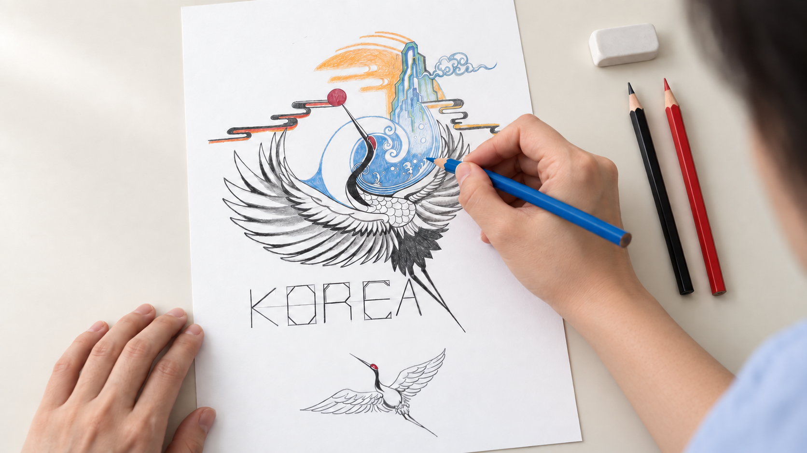
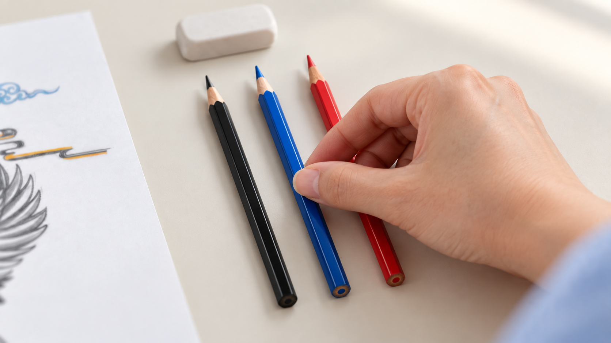

01 · 인물 클로즈업승인된 인물 원본의 우측 상단 시선과 표정을 유지합니다.구도: 측면 클로즈업 · 고정에 가까운 구도동작: 표정·시선 변화 없음. 기존 인물 이미지 유지.계획 노출 약 2초 · 전환 겹침 전 기준
이번 수정02 · 뒤에서 허리끈 매듭 마무리후면 허리 클로즈업. 이미 만들어진 리본 매듭을 양손으로 가볍게 조이며 앞치마 착용을 마칩니다.구도: 뒤쪽 허리 높이 · 손과 매듭에 초점동작: 고리를 한 손에 하나씩 잡고 1~2cm만 조인 뒤 멈춤. 끈 꼬기·큰 팔 이동 없이 원본 1배속.계획 노출 약 2초 · 전환 겹침 전 기준
03 · 연필로 첫 선종이에 닿은 흑연 연필로 깃털 윤곽의 짧은 선을 그립니다.구도: 연필 끝과 종이 접점 매크로동작: 짧은 선 한 번. 연필 끝 이동과 흑연 선이 생기는 위치를 일치시킬 것. 감속 없음.계획 노출 약 2초 · 전환 겹침 전 기준
04 · 첫 파란색무채색 밑그림의 파도 안쪽에 파란 색연필로 첫 색을 넣습니다.구도: 파란 심과 채색 영역 초근접동작: 파란 영역 안에서 짧은 채색. 흰색 소용돌이 선을 침범하지 않음. 감속 없음.계획 노출 약 2초 · 전환 겹침 전 기준
05 · 부분 채색부분 채색된 작품을 보여주며 첫 색과 완성작 사이의 과정을 연결합니다.구도: 높은 사선 구도 · 손과 작품에 초점동작: 파란 부분에 작은 채색 동작. 종이·그림·주변 소품 위치 고정. 감속 없음.계획 노출 약 2초 · 전환 겹침 전 기준
이번 수정06 · 파란 색연필 내려놓기그리던 파란 색연필을 검정 연필과 빨간 색연필 사이에 놓습니다. 손이 빠진 뒤 완성작으로 넘어갑니다.구도: 낮은 사선 클로즈업 · 손과 연필 접점 초점 · 작품 전체는 화면 밖동작: 연필이 책상에 닿은 상태에서 엄지와 검지를 가볍게 놓고 오른쪽으로 손이 빠짐. 연필은 구르지 않음. 1배속.계획 노출 약 1.5초 · 전환 겹침 전 기준
07 · 완성작 클로즈업으로 마무리인물 뒤에서 작품을 보던 첫 프레임을 삭제했습니다. 완성작을 수직으로 내려다보는 이 한 장면에서 바로 끝냅니다.구도: 수직 탑뷰 · 작품 전체와 KOREA·하단 학이 보이는 고정 구도동작: 카메라 고정. 전진·상승·회전·줌 없음. 손·머리·어깨 등장 없음. 추가 채색이나 마지막 터치 없이 완성작 유지.계획 노출 약 3초 · 전환 겹침 전 기준